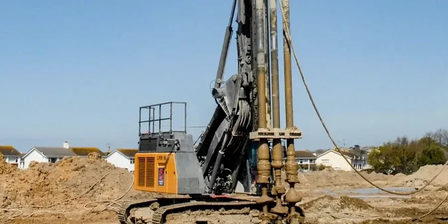

Ein Bauvorhaben in Bottrop, etwa an der Prosperstraße oder im Bereich des ehemaligen Zechengeländes, stellt uns oft vor eine Herausforderung: Der Untergrund besteht aus einer heterogenen Mischung aus Auffüllungen, bergbaulich beeinflussten Lockergesteinen und grundwasserführenden Sanden. Genau hier setzen wir mit der Deep Soil Mixing (DSM) Bemessung an. Wir kombinieren die Zementinjektion mit dem mechanischen Mischen des anstehenden Bodens, um geometrisch definierte Säulen oder Wandscheiben zu erzeugen. Vor dem Einbau ermitteln wir über Masw-Versuche (Vs30) die dynamischen Steifigkeitsprofile, denn Bottrop liegt im Einflussbereich des Rheinischen Schiefergebirges und erfordert eine genaue Abschätzung der Baugrunddynamik. Die DSM-Bemessung selbst folgt dem Teilsicherheitskonzept des Eurocode 7, wobei wir die charakteristischen Bodenkennwerte aus Rammkernsondierungen und Drucksondierungen ableiten.

Bei heterogenen Auffüllungen in Bottrop erreichen wir mit DSM eine gleichmäßige Festigkeit von 2–4 MN/m² – das reduziert Setzungsunterschiede um über 70 % im Vergleich zu unverbessertem Boden.
Methodik und Umfang
- Zementgehalt: 150–300 kg/m³ Boden
- Einaxiale Druckfestigkeit nach 28 Tagen: 1–5 MN/m²
- Steifemodul: 100–500 MN/m²
- Durchlässigkeit: k < 1·10⁻⁸ m/s
Lokale Besonderheiten
In Bottrop sehen wir immer wieder, dass die DSM-Bemessung an zwei kritischen Punkten scheitert: Erstens an der unzureichenden Berücksichtigung des Bergbaueinflusses – alte Stollen oder Hohlräume im Karbon führen zu unerwarteten Zementverlusten. Zweitens an der falschen Annahme der Grundwasserfließgeschwindigkeit; bei Werten über 5 m/d wird der Zementleim ausgewaschen, bevor er aushärten kann. Wir umgehen dies durch Vorversuche mit Tracern und passen die DSM-Bemessung iterativ an. Wer diese Risiken ignoriert, riskiert eine unvollständige Bodenverbesserung und daraus folgende Setzungsschäden an angrenzender Bebauung.
Benötigen Sie eine geotechnische Bewertung?
Antwort innerhalb von 24h.
E-Mail: kontakt@geotechnik.sbsGeltende Normen
Eurocode 7 (EN 1997-1:2004) – Geotechnische Bemessung, DAfStb-Richtlinie „Bodenvermörtelung“ (2019), DIN 4094-1:2002 – Ramm- und Drucksondierungen, DIN 18196:2011 – Bodenklassifikation für bautechnische Zwecke
Zugehörige Fachleistungen
Bemessung von DSM-Säulen für Flach- und Tiefgründungen
Wir dimensionieren Einzel- und Blocksäulen für Streifen- und Einzelfundamente, basierend auf der charakteristischen Bodensteifigkeit und der zulässigen Setzung. Die DSM-Bemessung erfolgt nach der Methode der finiten Elemente (FEM) unter Berücksichtigung der Lastausbreitung im verbesserten Bodenkörper.
DSM-Wandscheiben für Baugrubenumschließungen
Für tiefe Baugruben in Bottrop, etwa im Bereich der Innenstadt oder entlang der Boye, planen wir überschnittene DSM-Säulen als temporäre oder dauerhafte Verbauwände. Die Bemessung umfasst den Erd- und Wasserdruck sowie die Aussteifungslagen nach EC 7.
Bodenverbesserung unter Verkehrswegen und Dämmen
Bei Straßen- und Bahndämmen auf weichen Böden setzen wir DSM-Säulen unter dem Dammkörper ein, um Setzungen zu minimieren und die Standsicherheit zu erhöhen. Die Bemessung berücksichtigt die dynamischen Lasten aus dem Verkehr und die Langzeitentwicklung der Säulenfestigkeit.
Typische Parameter
Häufige Fragen
Welche Bodenverhältnisse sind in Bottrop für DSM besonders kritisch?
Besonders kritisch sind die bergbaulich beeinflussten Auffüllungen mit wechselnder Korngröße und das grundwasserführende Karbon. Hier muss die DSM-Bemessung den inhomogenen Zementverbrauch und die mögliche Auswaschung durch Grundwasserströmung berücksichtigen. Wir führen vorab Rammkernsondierungen und Tracerversuche durch, um die lokale Heterogenität zu quantifizieren.
Wie wird die DSM-Bemessung in Bottrop an die lokale Normung angepasst?
Die DSM-Bemessung folgt dem Eurocode 7 (EN 1997-1:2004) in Kombination mit der DAfStb-Richtlinie „Bodenvermörtelung“. Zusätzlich berücksichtigen wir die DIN 4094 für die Sondierungen und die DIN 18196 für die Bodenklassifikation. Für Bottrop spezifisch integrieren wir die Empfehlungen des Deutschen Bergbaumuseums zur Behandlung von Altbergbauflächen.
Welche Zemente und Zusatzmittel werden für DSM in Bottrop empfohlen?
Wir verwenden überwiegend Portlandzement CEM I 42,5 R mit einem Wasserzementwert von 0,9 bis 1,1. Bei tonigen Böden setzen wir zusätzlich Fließmittel oder Bentonit ein, um die Mischbarkeit zu verbessern. Die genaue Rezeptur wird in einem Mischversuch vor Ort festgelegt, abgestimmt auf die chemische Zusammensetzung des Grundwassers in Bottrop.
Kann DSM in Bottrop auch unter Grundwasser eingesetzt werden?
Ja, DSM eignet sich besonders gut für den Einbau unter Grundwasser, da der Zementleim direkt im Boden eingemischt wird und keine offene Wasserhaltung erforderlich ist. Die Bemessung muss jedoch die Grundwasserfließgeschwindigkeit berücksichtigen – bei Werten über 5 m/d ist eine Abdichtung durch Spundwände oder ein verlangsamter Einbau notwendig. Wir messen die Fließgeschwindigkeit mit Tracern vorab.
Was kostet eine DSM-Bemessung und -Ausführung in Bottrop?
Die Kosten für DSM in Bottrop liegen zwischen €1.720 und €5.130 je nach Säulendurchmesser, Tiefe und Zementmenge. Eine reine Bemessung ohne Ausführung kostet zwischen €800 und €2.000. Der genaue Preis hängt vom Umfang der Voruntersuchungen und der Anzahl der Säulen ab. Sie erhalten von uns ein detailliertes Angebot nach der ersten Baugrundbegehung.